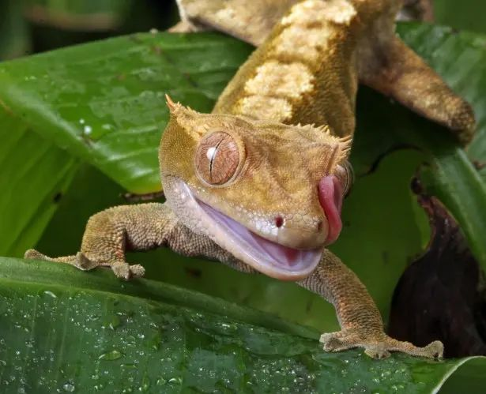
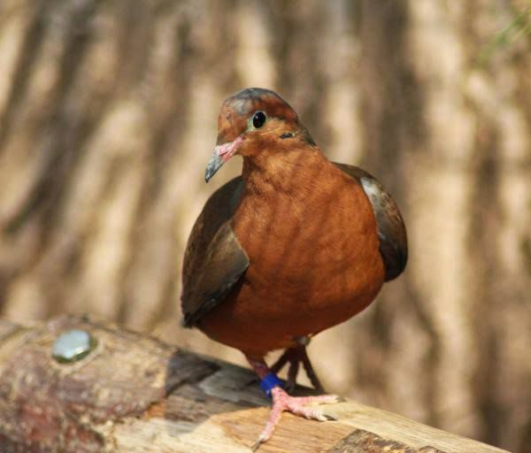
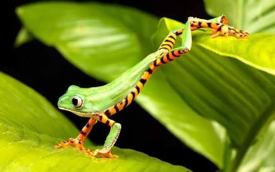
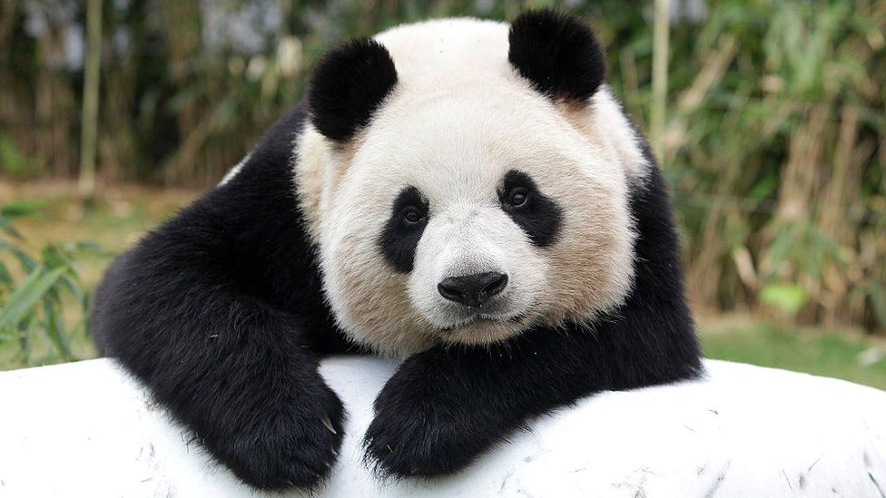

El Geco crestado es un reptil originario de Nueva Caledonia. Vive en árboles y utiliza sus patas adhesivas para trepar fácilmente por ramas y paredes. Sus grandes ojos le ayudan a ver mejor durante la noche, ya que es un animal nocturno. Además, este gecko es conocido por su apariencia curiosa y por ser tranquilo, lo que lo convierte en una mascota muy popular entre los amantes de los reptiles.

Es un ave parecida a una paloma o tórtola tropical de color marrón rojizo. Tiene cuerpo redondeado, patas delgadas y un pico corto. Estas aves viven en bosques y zonas con mucha vegetación. Se alimentan principalmente de semillas y pequeños frutos. Suelen caminar por el suelo buscando comida y son muy tranquilas. Su plumaje les ayuda a amuflarse entre árboles y hojas secas.

La Rana lémur es un anfibio pequeño conocido por sus ojos grandes y su color verde brillante. Vive en los bosques húmedos de América Central, especialmente cerca de ríos y árboles. Se alimenta de insectos equeños como mosquitos y moscas. Tiene patas largas que le ayudan a trepar y saltar entre las ramas. Muchas especies de rana lémur están en peligro por la contaminación y la pérdida de hábitat. Es un animal muy importante para el equilibrio de los ecosistemas tropicales.

El Panda gigante es un mamífero famoso por su pelaje blanco y negro. Vive en las montañas y bosques de bambú de China. Su alimento principal es el bambú, aunque también puede comer frutas y pequeños animales. Es un animal tranquilo pasa gran parte del día comiendo y descansando. Los pandas están protegidos porque durante mucho tiempo estuvieron en peligro de extinción. Son considerados un símbolo de la conservació de la naturaleza en el mundo.